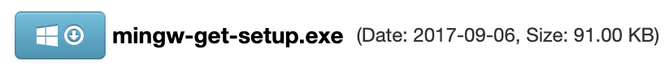
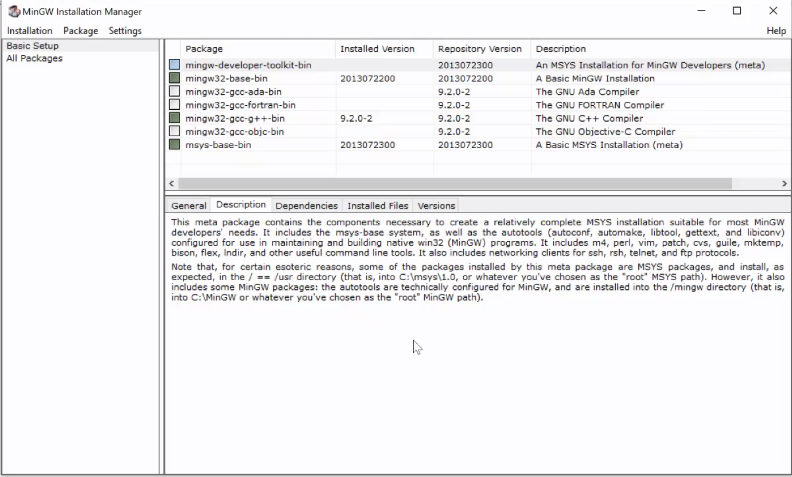
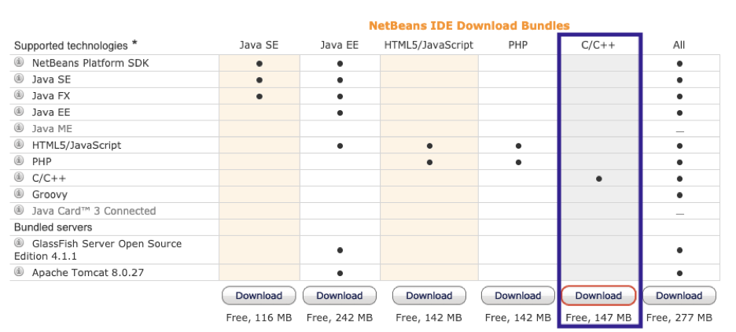
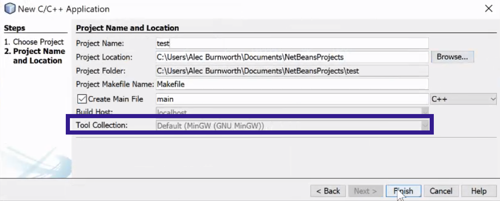
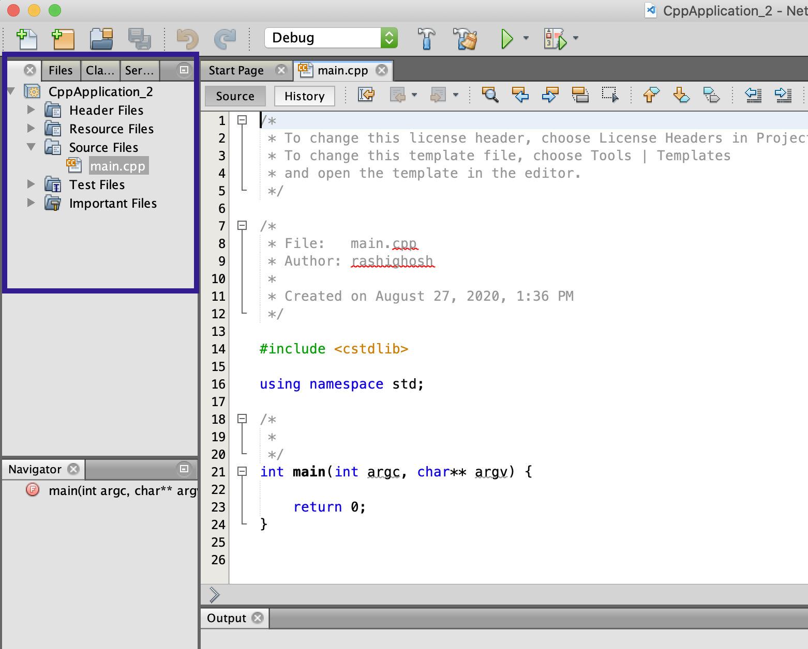

preliminary step (jdk + mingw)
☆ note: you can skip this step if you already have the java developer kit and mingw installed
1. download and install the latest java developer kit from the following site:
https://www.oracle.com/java/technologies/javase-jdk14-downloads.html
2. for windows, we also have to download & install a c++ compiler called mingw. you can do so from here:
https://osdn.net/projects/mingw/releases/
3. click the blue button with the windows icon that has mingw-get-setup.exe next to it (about halfway down the page):
4. download & install
5. once installed a window like this pops up:
you want to mark the boxes as shown above for installation. specifically:
mingw32-base-bin
mingw32-gcc-g++-bin
msys-base-bin
6. now click installation (in the top left corner) > apply changes
7. it might take a minute, but once it's done, you're good to go!
installation steps
1. download netbeans 8.2 from the following link:
https://netbeans.org/downloads/8.2/rc/
☆ note: it MUST be netbeans 8.2, as this is the easiest version to download that supports c++!
2. download from the c++ column, as shown below:
3. and once that is installed & downloaded, you should be good to go!
basic use
1. launch netbeans
2. click the orange folder at the top right with the little plus sign (create new project):

3. under categories, select c/c++ under projects, then select c/c++ application
☆ note: it is SUPER important you select c/c++ application!!!

4. click next. on the following location, be sure to change the project location to a place on your computer where you can easily find it, and click finish
☆ note: make sure the Tool Collection displays the following (if not, something went wrong in the mingw installation):
5. in the left panel now, you should see your application. expand source files and you should see a main.cpp. double click that, and start coding!
6. once you have written your program, click the green play button (to the right of the “Debug” dropdown) to compile & run the program. (if you get any errors about a debugger tool missing at any point, just exit and don’t worry about it)
& that is it! happy coding!! :D